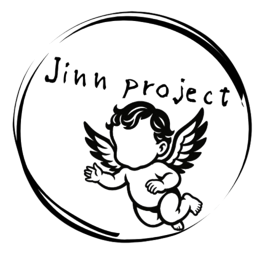

ThoughtMap
Paste or upload text, generate a thought composition profile, visualize clusters, and search by meaning instead of keywords.
Follow development →
Jinn ProjectThought / Body / Material
Jinn Project explores invisible patterns behind ideas, movement, materials, and infrastructure — turning vague structures into readable forms.
Projects
Paste or upload text, generate a thought composition profile, visualize clusters, and search by meaning instead of keywords.
Follow development →Conductive TPU sole research for grounding, movement feedback, and everyday body-interface infrastructure.
Open app →ePTFE × TPU laminated material experiments for flexible, durable, and functional fabric systems.
About
From AI text analysis to wearable material experiments, Jinn Project treats technology as a way to expose patterns that normally remain unseen. The goal is not only optimization, but recognition: making hidden relations easier to sense, compare, and discuss.